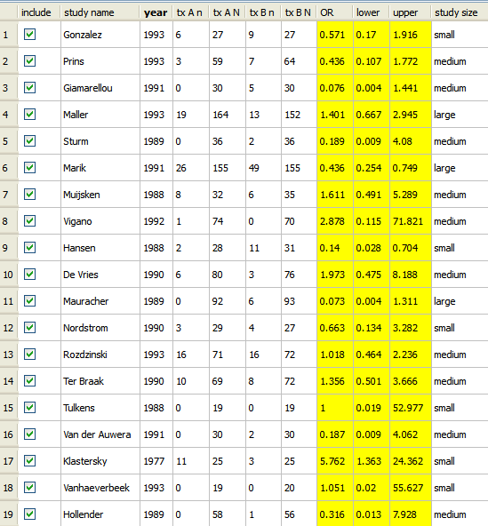

Covariates are additional variables related to the primary data in your data set. In Open Meta-Analyst, covariates are used for both meta-regression and subgroup analyis. A covariate can be of the following types:
The following example shows how to add a factor covariate to the data described in Opening an Existing Data Set. The covariate corresponds to the size of the treatment groups in the studies,To add the covariate to the data set,
The Open Meta-Analysis window now displays a new column for the covariate.

You can enter data for the covariate by double-clicking in the column and typing values. Enter the values "small," "medium", or "large," according to the numbers of individuals in the treatment group (tx AN):

 | Changing the Metric | Performing a Meta-Regression |  |